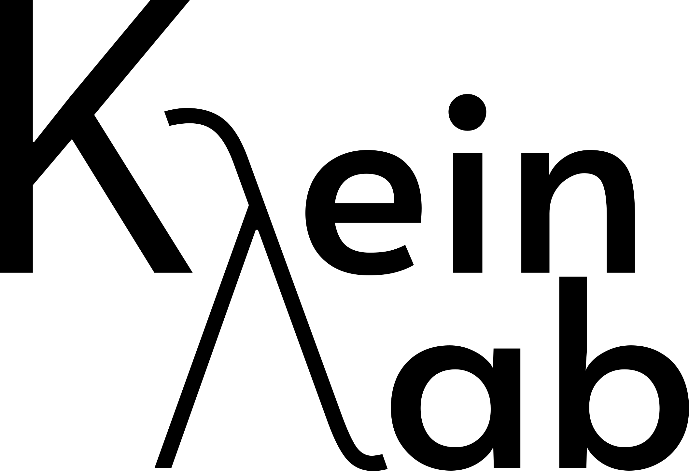
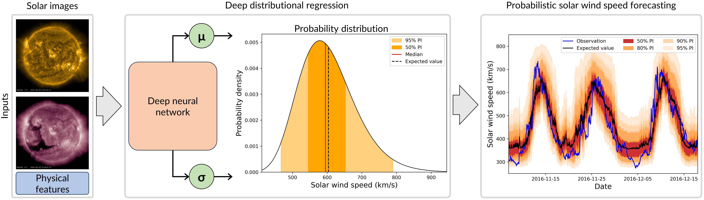
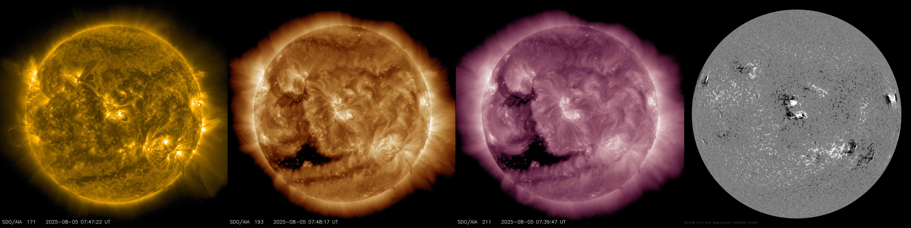
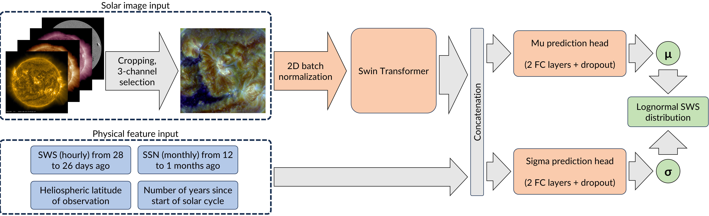
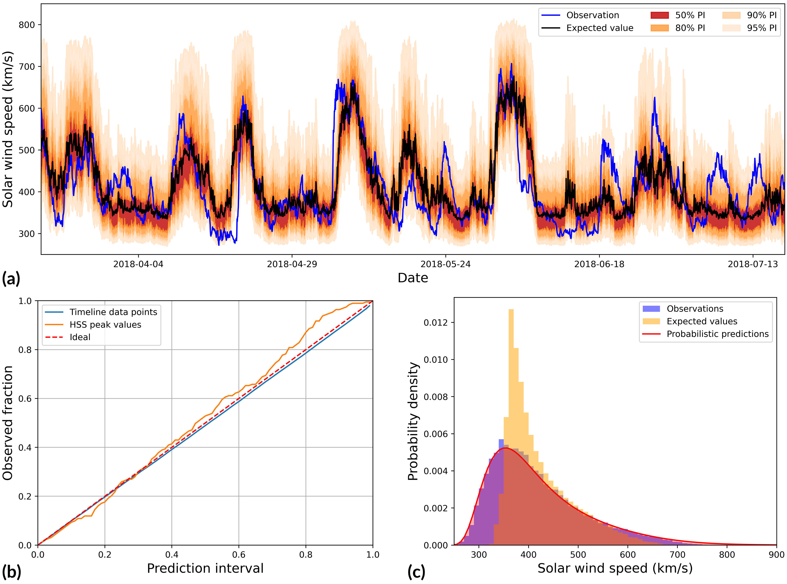

Hazardous weather conditions do not only exist on Earth, but also in space. Space weather can affect satellites, navigation systems, power grids and even astronauts. Additionally, it creates the beautiful phenomenon of northern (and southern) lights.
The main driver of space weather is the solar wind, a stream of charged particles continuously emitted by the Sun. Particularly important are high-speed solar wind streams (HSSs), which originate from coronal holes: regions of the solar corona where the magnetic field is open towards interplanetary space.
Although coronal holes can be identified well in solar images (see Figure 2), predicting HSSs several days in advance remains challenging. Observations of the Sun and its surroundings are limited, and existing forecasting models often underestimate the peaks of HSSs. Moreover, most operational models provide a single predicted value (often the conditional expectation) without quantifying its uncertainty.
To address these limitations, we propose PROSWIN, which predicts complete conditional probability distributions of the solar wind speed instead of a single point estimate.

Inspired by the general idea of distributional regression [1], PROSWIN models all parameters of a parametric probability distribution family as functions of the inputs. Since the distribution of observed solar wind speeds is strictly positive and right-skewed, we assume the conditional distributions of future solar wind speeds to be log-normally distributed with parameters μ and σ. This naturally models the mentioned properties, specifically the heavy upper tail where the most relevant high-speed events are located in.
The prediction problem can then be formulated as predicting the distributional parameters μ(x) and σ(x) of the log-normal distribution based on the inputs x, allowing the location and shape of the predicted distribution to vary depending on the solar observations. In addition, on the log-scale the parameters have a direct interpretation as conditional mean and conditional standard deviation.
To learn the functions μ(x) and σ(x), we use a neural network. It uses a Swin Transformer as image encoder, a more sophisticated version of the Vision Transformer architecture with shifting window attention. The network processes solar images and combines the extracted image features with additional physical features. Two prediction heads then estimate μ and σ, respectively (see Figure 3).
The image inputs are provided by NASA's Solar Dynamics Observatory spacecraft. We investigate three extreme ultraviolet channels, at 171, 193, and 211 Å, which capture different temperature regimes in the solar corona, and magnetograms, which measure the Sun's magnetic field (see Figure 2). In addition to the images, the model uses physical features describing the solar wind and the state of the solar cycle.

We train and evaluate PROSWIN on hourly data from 2010 to 2024 (approximately 123,000 samples). We use five-fold cross-validation to evaluate the model and compare different combinations of solar image channels and magnetograms.
We find that adding the 171 Å EUV channel to the commonly used 193 and 211 Å channels improves prediction performance, providing complementary information about the solar corona. Magnetograms, in contrast, do not improve the best-performing configurations.
The predicted distributions are very well calibrated. For the entire time series, the average absolute deviation between nominal and observed coverage is only 0.9%, increasing to 2.9% for HSS peak values. This means that the predicted uncertainty intervals closely match the observed frequencies with which they contain the actual solar wind speeds. Furthermore, the observed speed distribution is reproduced well by the aggregated probabilistic predictions, including its heavy upper tail of high-speed stream events, which is not captured by single-value predictions (see Figure 4).
Compared to existing physical and machine learning models, PROSWIN achieves the best balance between accuracy across the entire time series and accuracy at HSS peaks and the best calibration. An additional evaluation on two years of new data from the recent solar maximum confirms that its uncertainty estimates remain well calibrated, although accuracy decreases as expected for this strongly disturbed phase.

Probabilistic forecasts have long been standard in terrestrial meteorology. For example, when checking the weather forecast, we often see the probability of rain rather than a simple yes-or-no prediction. Such forecasts communicate prediction uncertainty and are therefore important for a realistic risk assessment. The same principle applies to space weather. Knowing the probability of different outcomes substantially improves the actionability of operational forecasts.
Our results demonstrate that solar images can be used to produce accurate, well-calibrated probabilistic solar wind forecasts. PROSWIN is a step toward wider adoption of probabilistic forecasting in space weather, where reliable uncertainty estimates are particularly important given the limited observations of the heliosphere. The approach is also transferable to other forecasting problems in which uncertainty and the risks of rare events are important.